프롬프팅 대회 · 가장 비슷한 그림 만들기
10분그림 한 장을 보시고, Copilot으로 가장 비슷한 그림을 만들어 올려보겠습니다!
이 그림과 가장 비슷한 그림을 만들어 주세요
방법은 정해 두지 않았습니다. Copilot에서 그림을 만들고, 그림과 그 그림을 만든 프롬프트를 아래 칸에 올려보겠습니다!
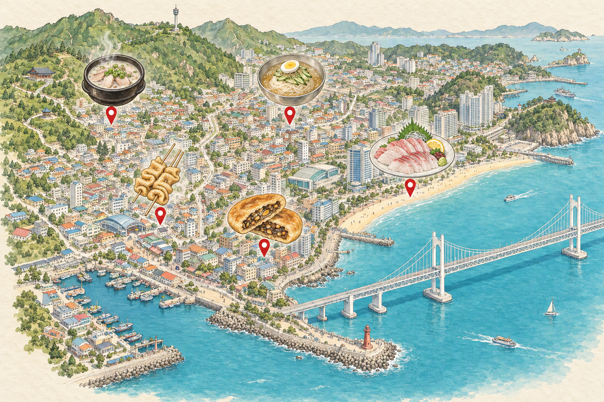

그림을 크게 보시려면 그림을 눌러 주세요.
- Copilot Chat 열기m365.cloud.microsoft/chat 에 받아 오신 Microsoft 계정으로 로그인합니다.
- 그림 만들기채팅창에 프롬프트를 보내 그림을 받습니다. 마음에 들 때까지 여러 번 고쳐도 됩니다.
- 그림 저장하기만들어진 그림 위의 내려받기 단추를 누릅니다.
- 그림과 프롬프트 올리기아래 칸에 이름, 프롬프트, 그림 파일을 넣고 [올리기]를 누릅니다.
올리신 그림은 이 칸 아래에 모두 모입니다. 그림을 누르면 그 그림을 만든 프롬프트가 함께 보입니다.
그림은 올리기 전에 브라우저에서 작게 줄여서 보냅니다. 이름 칸에는 별명을 적으셔도 됩니다.
1~2년 전의 프롬프트 돌아보기
5분방금 대회에서 쓰신 방법들을 예전에 가르치던 프롬프트와 나란히 놓아보겠습니다!
이 단계는 프롬프팅 대회가 끝나면 열립니다.
1~2년 전에 우리가 가르치던 프롬프트 다섯 가지
선생님들께서 연수에서 가르치시던 방법을 먼저 돌아보겠습니다!
# 역할 # 지시사항 # 제약조건 # 출력형식
마크다운 제목으로 칸을 나눠 썼습니다.
너는 20년 차 과학 교사야.
누구처럼 답할지를 먼저 정해 주었습니다.
예시 1: (원하는 결과) 예시 2: (원하는 결과)
원하는 결과의 예를 두세 개 보여 주었습니다.
단계별로 생각해 줘.
생각하는 순서를 밟게 하는 문장을 붙였습니다.
CO-STAR, RTF
칸 이름을 외우는 공식이 있었습니다.
다섯 가지 모두 사람이 프롬프트를 잘 쓰는 방법입니다. 지금도 통하지만 달라진 점이 두 가지 있습니다. 모델이 좋아져서 「단계별로 생각해 줘」 같은 문장은 붙이지 않아도 결과가 비슷하게 나옵니다. 그리고 마크다운은 채팅창에 매번 쳐 넣는 대신, 파일로 저장해 두고 AI가 읽게 하는 쪽으로 옮겨 갔습니다.
쓰기에서 뽑기로, 뽑기에서 쌓기로
내가 마크다운으로 프롬프트를 잘 씁니다. 선생님들께서 이미 가르치시던 방법입니다.
프롬프트를 AI가 뽑아내게 합니다. 오늘 1차시에 하는 일입니다.
뽑은 것을 파일과 스킬로 남겨 GitHub에 올립니다. 오늘 2차시에 하는 일입니다.
Reverse Prompting의 두 갈래
프롬프트를 내가 쓰지 않고 AI가 쓰게 하는 방법을 오늘은 두 이름으로 나눠 부르겠습니다!
대회에서 그림을 Copilot에게 보여 주고 「이 그림을 만들 프롬프트를 써 줘」라고 하신 분이 계셨다면, 그 방법이 Decode입니다. 다음 단계에서는 Interview로 작은 프로그램을 만듭니다.
두 이름은 오늘 연수에서 부르기 쉽게 붙인 것입니다. 더 찾아보실 때 쓰는 검색어는 Interview가 Flipped Interaction Pattern이고, Decode가 Reverse Prompt Engineering입니다.
바이브코딩 · Copilot에게 질문받아 만들기
25분바이브코딩이 무엇인지 짧게 보고, Copilot에게 질문을 받아 작은 프로그램 하나를 만들어보겠습니다!
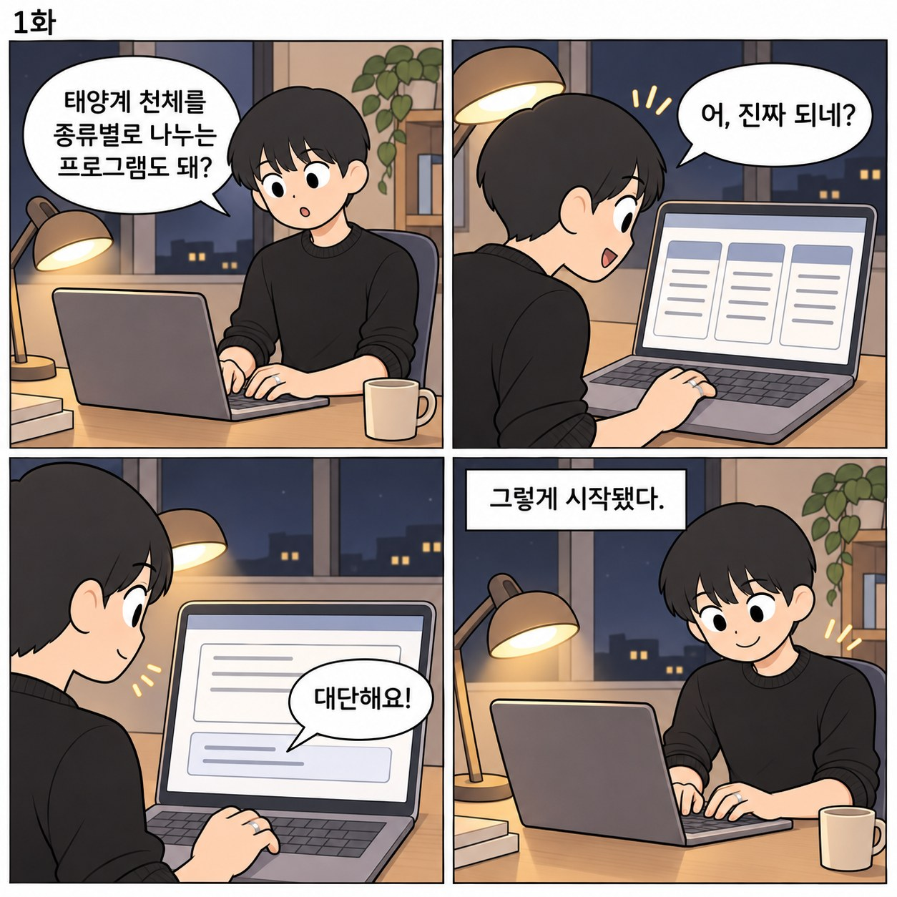
코드를 몰라도, 말로 시켜서 만듭니다
만들고 싶은 것을 말로 설명하면 AI가 코드를 쓰고, 저는 결과를 보면서 다시 말로 고칩니다.
완성도 높이는
작업
바이브코딩이라는 말은 2025년 초 AI 연구자 안드레이 카파시가 처음 썼습니다. 코드를 한 줄씩 짜는 대신 원하는 느낌을 말로 전하고, 나온 결과를 보면서 다시 말로 고치는 방식입니다.
저는 코드를 정식으로 배운 적이 없습니다. 제가 하는 일은 수업 장면을 설명하고, 나온 화면이 과학적으로 맞는지 확인하고, 틀린 곳을 짚어 고쳐 달라고 하는 것입니다.
바이브코딩에 많이 쓰는 도구는 Claude, ChatGPT, Gemini, Copilot입니다. 오늘 실습은 Microsoft 도구인 Copilot으로 합니다.
말로 시키고, 써 보고, 다시 말합니다
Copilot으로 가위바위보 슬롯머신을 만든 과정을 45초로 보겠습니다!
처음에는 가위바위보에서 무엇을 낼지 정해 주는 프로그램을 슬롯머신처럼 만들어 달라고 했습니다. 그다음 버튼을 누르면 폭죽이 나오게 하고 하나빼기 모드도 넣어 달라고 했습니다.
기능을 더했더니 하나빼기가 제대로 되지 않았습니다. 그래서 그 부분을 다시 고쳐 달라고 했습니다. 저는 이렇게 말로 시키고, 써 보고, 다시 말하는 과정을 바이브코딩이라고 부릅니다.
HTML은 뼈대, CSS는 피부와 옷, JavaScript는 근육과 신경
아래 버튼을 차례로 눌러 보세요. 같은 기체 입자 상자에 한 겹씩 더해집니다.
기체 입자 상자
입자의 크기는 온도가 바뀌어도 그대로입니다. 달라지는 것은 움직이는 빠르기입니다.
HTML은 제목, 슬라이더, 버튼, 그림 자리가 어디에 있는지 적는 뼈대입니다. CSS는 색, 글꼴, 간격, 모서리 같은 겉모습이고, DESIGN.md 가 바꾸는 곳이 여기입니다. JavaScript는 슬라이더를 움직이면 온도에 맞춰 입자의 빠르기를 계산하고 다시 그리는 근육과 신경입니다. 이 상자는 입자의 평균 빠르기가 절대온도의 제곱근에 비례하도록 계산해서 그립니다.
오늘 만드는 도구는 이 세 가지를 index.html 한 파일에 모두 담습니다. 그리고 Java와 JavaScript는 이름만 닮은 서로 다른 언어입니다. 웹 페이지를 움직이는 것은 JavaScript입니다.
Copilot이 묻고, 저는 답만 합니다
interview-me 스킬과 규칙 파일을 Copilot에 첨부하고, 만들고 싶은 것 한 줄만 보내보겠습니다!
첨부한 interview-me 스킬과 규칙대로 나를 인터뷰해 줘. 질문은 한국어로, 한 번에 하나씩 해 줘. 만들고 싶은 것: (여기에 한 줄)
- 스킬 파일과 규칙 파일 내려받기위 두 단추를 누릅니다. 스킬은 Addy Osmani가 GitHub에 공개한 파일 그대로입니다.
- Copilot Chat 새 대화에 두 파일 첨부하기대회 때 쓰던 대화는 그대로 두고 새 대화를 엽니다. 채팅창의 파일 첨부 단추를 누르거나 파일을 끌어다 놓습니다.
- 보내는 말을 붙여 넣고 「만들고 싶은 것」 한 줄 고치기[복사]를 누르고 채팅창에 붙여 넣습니다. 떠오르는 것이 없으면 아래 예시 주제에서 하나를 고릅니다.
- Copilot의 질문에 답하기「맞아」 또는 「아니, ~야」로 짧게 답합니다. Copilot이 정리한 내용을 보여 주면 「응, 맞아」라고 분명하게 답합니다.
- 요구사항.md 받아서 저장하기답으로 나온 요구사항.md 를 복사해 메모장에 붙이고, 파일 이름을 요구사항.md 로 저장합니다.
- 새 대화에서 만들기새 대화를 열고 요구사항.md 내용만 붙여 넣은 뒤 「이 요구사항대로 HTML 파일 하나로 만들어 줘」라고 보냅니다.
- 만든 화면 열어 보기받은 코드를 메모장에 붙이고 index.html 로 저장한 뒤, 그 파일을 두 번 눌러 엽니다.
만들고 싶은 것이 떠오르지 않을 때 고르실 예시 주제
자리 뽑기 프로그램 만들어 줘
타이머 만들어 줘
퀴즈 앱 만들어 줘
모둠 점수판 만들어 줘
발표 자료 만들어 줘
수업 자료 모아 두는 페이지 만들어 줘
파일을 첨부할 수 없을 때 쓰는 프롬프트
첨부가 되지 않으면 아래 프롬프트를 통째로 붙여 넣습니다. 같은 일을 한국어 프롬프트 하나로 줄인 것입니다.
[Interview 프롬프트: AI가 묻고, 나는 답만 하는 판] 아래에 만들고 싶은 것을 한 줄만 적었어. 바로 만들지 말고 나를 인터뷰해 줘. 만들고 싶은 것: (여기에 한 줄) ■ 묻는 법 - 질문은 한 번에 하나만 한다. - 질문마다 네 추측을 붙인다. 「~라고 추측하는데, 맞나요?」처럼 물어서 내가 「맞아」나 「아니, ~야」로 답할 수 있게 한다. - 가장 먼저 왜 만드는지를 묻는다. 언제, 누가, 어떤 상황에서 쓰는지. - 그다음에 묻는다. 누가 화면을 보는지(교사 혼자, 학생 각자), 어떤 기기인지(전자칠판, 태블릿, 휴대폰), 몇 분 동안 쓰는지, 결과를 남겨야 하는지. - 내가 「깔끔하게」 「확장성 있게」 「알아서 잘」처럼 말하면 그대로 받지 말고, 지금 꼭 필요한 것이 무엇인지 되묻는다. - 질문은 많아야 6개. 내 다음 답을 짐작할 수 있을 만큼 알게 되면 멈춘다. ■ 끝내는 법 - 인터뷰가 끝나면 「요구사항.md」를 써서 보여 준다. 칸은 넷이다: 왜 만드나 / 만들 것 / 만들지 않을 것 / 다 됐는지 확인하는 법. - 「만들지 않을 것」은 세 가지 이상 적는다. - 요구사항.md 를 보여 준 뒤에는 멈춘다. 내가 시키기 전에는 만들기 시작하지 않는다.
interview-me는 Addy Osmani가 GitHub에 MIT 라이선스로 공개한 스킬입니다. 이 스킬을 받은 AI는 질문을 한 번에 하나씩, 자기 추측을 붙여서 합니다. 「확장성 있게」처럼 그럴듯한 대답이 나오면 정말 원하는 것이 무엇인지 되묻고, 마지막에는 만들지 않을 것까지 적어서 확인을 받은 뒤 멈춥니다.
만들고 싶은 것을 처음부터 글로 설명하기는 어렵습니다. AI가 던진 추측이 틀렸을 때 「아니, 그게 아니라」 하고 바로잡기는 훨씬 쉽습니다.
스킬 파일은 영어로 적혀 있습니다. 그래서 규칙 파일에 한국어로 묻고, 끝나면 요구사항.md 로 정리하라는 줄을 넣어 두었습니다.
여섯째 줄에서 새 대화를 여는 까닭은 질문을 주고받은 대화에 AI의 틀린 추측과 버린 생각이 남아 있기 때문입니다. 요구사항.md 만 들고 새 대화로 가면 그 흔적 없이 만들기 시작합니다.
같은 「타이머 만들어 줘」라도 모둠 활동 시간을 재려는 것인지, 학생 발표를 3분으로 맞추려는 것인지에 따라 화면이 달라집니다. 요구사항.md 의 「왜 만드나」와 「만들지 않을 것」이 그 차이를 적는 칸입니다.
내 컴퓨터에서 일하는 AI에는 이 스킬을 설치해 두고, 왜 만드는지가 빠진 요청이 오면 먼저 인터뷰하라는 규칙을 적어 둘 수 있습니다. 저도 제 컴퓨터에 그렇게 해 두었습니다.
 GitHub에 올려 주소 받기
GitHub에 올려 주소 받기
20분GitHub가 무엇인지 엔더 상자와 인스타그램에 빗대어 보고, 만든 파일을 올려 주소를 받은 뒤, 저장소 화면과 핵심 기능 다섯 가지를 실제 화면에서 읽어보겠습니다!
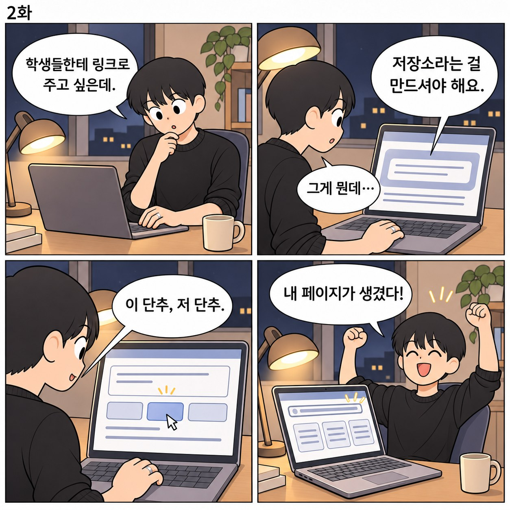
Git은 기록하는 도구, GitHub는 그 기록을 올려 두는 곳입니다
이름이 비슷한 Git과 GitHub를 나눠 보고, GitHub가 누구의 것인지 알아보겠습니다!
파일을 바꿀 때마다 누가, 언제, 무엇을 바꿨는지 적어 두는 도구입니다. 2005년에 리누스 토르발스가 만들었고, 내 컴퓨터 안에서 돌아갑니다.
Git으로 남긴 기록을 인터넷에 올려 두는 곳입니다. 2008년에 문을 열었고, 2018년에 Microsoft가 인수했습니다.
GitHub에 올려 둔 폴더 하나를 부르는 이름입니다. 오늘 선생님들께서 저장소를 하나씩 만드십니다.
Microsoft가 만든 무료 코드 편집기입니다. GitHub와 바로 이어지고, GitHub Copilot이 이 안에서 일합니다. 오늘은 설치하지 않습니다.
 Microsoft가 가진 것들
Microsoft가 가진 것들
AI가 만든 코드도, 다른 분이 만든 스킬도, 오픈소스 프로그램도 GitHub에 모입니다. 앞 단계에서 쓴 interview-me 스킬도 GitHub에서 받아 온 파일입니다.
저는 처음에 GitHub 화면에 파일을 끌어다 놓았고, 지금은 AI가 대신 올립니다. Git 명령어를 외우지 않아도, 바꿀 때마다 기록이 남고 예전 상태로 되돌릴 수 있다는 두 가지를 알면 맡길 수 있었습니다.
특징 하나. GitHub는 마인크래프트의 엔더 상자와 닮았습니다
엔더 상자의 특징과 GitHub의 특징을 나란히 놓고 보겠습니다!
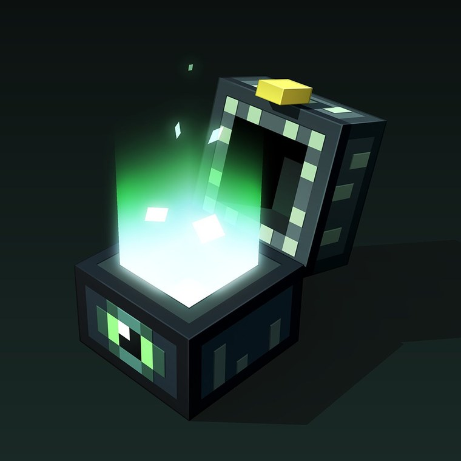
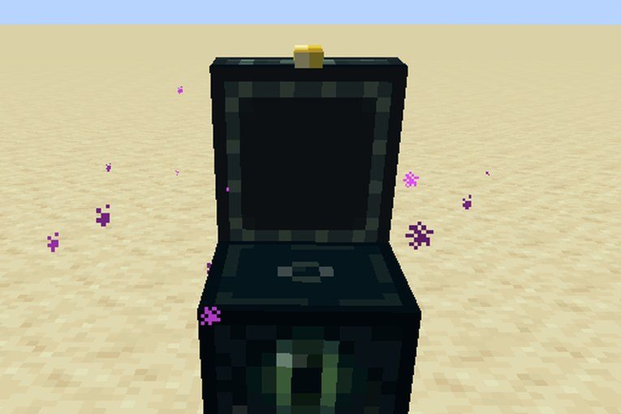
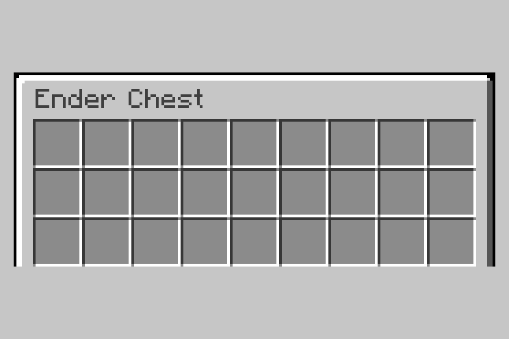
그림 출처 Minecraft Wiki. Minecraft는 Mojang Studios와 Microsoft의 저작물입니다.
| 엔더 상자 | GitHub |
|---|---|
| 닮은 점 | |
| 어느 엔더 상자를 열어도 내 물건이 들어 있습니다. | 어느 컴퓨터에서 로그인해도 내 저장소가 그대로 있습니다. |
| 상자를 부숴도 안에 넣은 물건은 사라지지 않습니다. | 컴퓨터가 고장 나도 올려 둔 파일은 남아 있습니다. |
| 내가 넣은 물건은 나만 꺼냅니다. | 내 저장소는 나만 고칩니다. |
| 다른 점 | |
| 남은 내 물건을 보지 못합니다. | 공개 저장소는 누구나 볼 수 있습니다. |
| 지금 들어 있는 물건만 보입니다. | 바꿀 때마다 기록이 남아 예전 상태로 돌아갑니다. |
| 혼자 씁니다. | 다른 사람을 초대해 같이 고치고, 남의 저장소를 내 계정으로 복사해 옵니다. |
개발자 커뮤니티에서 GitHub를 엔더 상자에 빗댄 그림을 보고 가져온 비유입니다. 엔더 상자는 집에 하나, 광산에 하나 놓아두면 어디서 열든 같은 27칸이 나옵니다. GitHub도 학교 컴퓨터에서 올린 파일을 집 컴퓨터에서 그대로 꺼냅니다.
마인크래프트를 만든 Mojang도 2014년에 Microsoft가 인수했습니다. 학교에서 쓰는 Minecraft Education도 Microsoft가 만듭니다.
특징 둘. GitHub는 개발자들의 인스타그램입니다
인스타그램에서 하는 일과 GitHub에서 하는 일을 나란히 놓고 보겠습니다!
| 인스타그램 | GitHub |
|---|---|
| 내 계정에 게시물을 올립니다. | 내 계정에 저장소를 올립니다. |
| 마음에 드는 게시물에 좋아요를 누르고 저장합니다. | 마음에 드는 저장소에 별(Star)을 누릅니다. 누른 저장소는 내 별 목록에 모입니다. |
| 계정을 팔로우해 새 게시물을 받아 봅니다. | 사람을 Follow하고, 저장소를 Watch해 바뀐 소식을 받습니다. |
| 댓글로 묻고 답합니다. | Issues에 질문과 오류를 적습니다. |
| 탐색 탭에서 요즘 인기 있는 게시물을 봅니다. | Trending에서 요즘 별을 많이 받는 저장소를 봅니다. |
| 다른 점 | |
| 게시물을 보고 지나갑니다. | 저장소를 통째로 내 계정에 복사해(Fork) 고쳐 씁니다. |
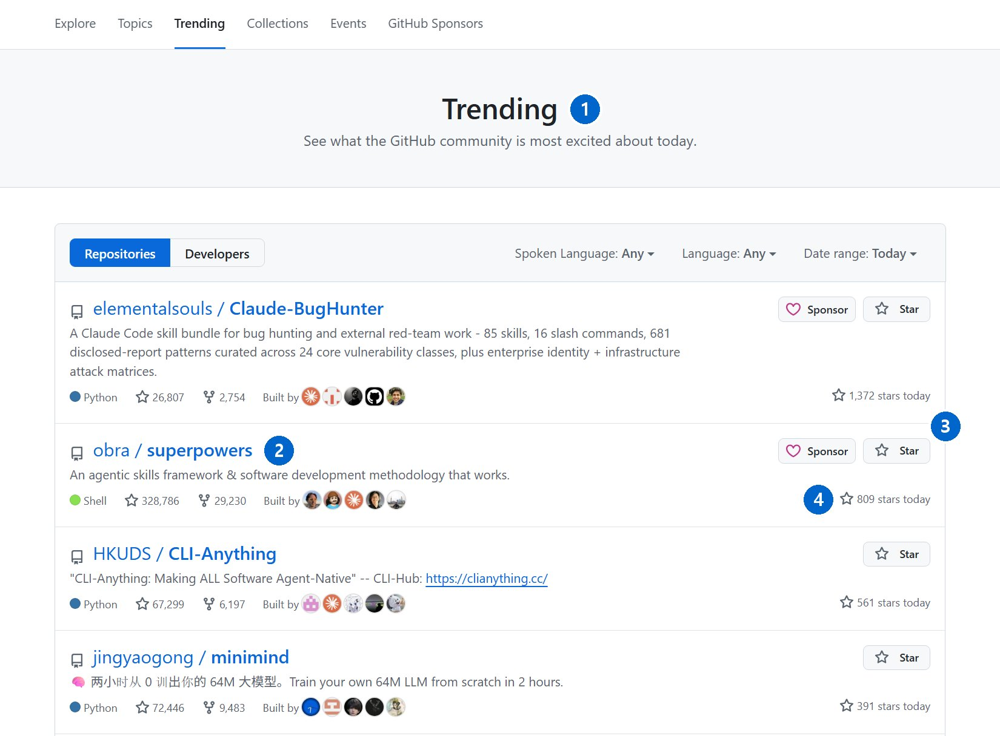
- Trending요즘 별을 많이 받는 저장소가 모이는 곳입니다.
- 주인 / 저장소 이름아래에 한 줄 소개가 있습니다. 이날 위쪽 두 개는 모두 AI에게 주는 스킬 모음입니다.
- Star누르면 내 별 목록에 담깁니다.
- stars today오늘 하루에 받은 별의 수입니다.
「개발자들의 인스타그램」은 강○욱 선생님께서 붙여 주신 비유입니다.
별은 많이 알려졌다는 표시입니다. 인스타그램의 좋아요가 많다고 내용이 맞는 것은 아니듯이, 별이 많다고 내 일에 맞는 것은 아닙니다. 별을 보고 들어간 뒤에는 README와 라이선스를 읽습니다.
교사가 바이브코딩을 배우는데 GitHub를 알아야 하는 이유
코드를 직접 쓰지 않는데도 GitHub를 알아야 하는 이유를 네 가지로 보겠습니다!
파일로 보내면 받는 사람이 내려받아 열어야 합니다. GitHub Pages에 올리면 학생은 링크만 누릅니다.
AI가 고치다가 잘 되던 것을 망가뜨릴 때가 있습니다. 바꿀 때마다 기록이 남아 있으면 그 전 상태로 돌아갑니다.
스킬과 오픈소스는 대부분 GitHub에 올라와 있습니다. 화면을 읽을 줄 알아야 쓸 만한 것을 골라 담습니다.
AI에게 저장소를 이어 두면 파일을 고치고 올리는 일까지 AI가 합니다. AI가 무엇을 바꿨는지는 기록에서 확인합니다.
저는 과학 시뮬레이션을 학생들에게 링크로 건네고 싶어서 GitHub를 처음 썼습니다. 네 가지 가운데 오늘은 첫째를 직접 해 보고, 셋째는 화면을 읽는 데까지 합니다.
GitHub Pages로 주소 받기
방금 저장한 index.html 과 요구사항.md 를 내 저장소에 올리고, 설정에서 Pages를 켜보겠습니다!
- 저장소 만들기github.com 오른쪽 위 [+] → [New repository] → 이름을 영어로 적고 [Public] → [Create repository]
- 파일 올리기「uploading an existing file」을 누르고 index.html 과 요구사항.md 를 끌어다 놓은 뒤 [Commit changes]
- Pages 켜기[Settings] → 왼쪽 [Pages] → Branch 를 [main] 으로 바꾸고 [Save]
- 주소 열기1~2분 뒤
https://내아이디.github.io/저장소이름/을 엽니다. Pages 화면 위쪽에도 주소가 뜹니다.
막혔을 때
주소를 열면 404가 뜹니다. Pages를 켜고 1~2분이 지나야 열립니다. 올린 파일 이름이 index.html 인지도 확인합니다.
Pages 화면에서 Branch를 고를 수 없습니다. 파일을 하나라도 올려야 main 이 생깁니다. 파일을 먼저 올리고 다시 들어갑니다.
Pages 화면에 요금제 안내가 뜹니다. 저장소가 Private이면 그렇습니다. [Settings] 맨 아래에서 Public으로 바꿉니다.
저는 과학 시뮬레이션을 만들어 과학 교사 카페에 올리다가, 학생들에게 링크로 건네고 싶어졌습니다. AI에게 물으니 GitHub를 쓰라고 했고, 알려 주는 대로 단추를 몇 개 눌렀더니 제 페이지가 생겼습니다.
지금은 AI에게 GitHub를 연결해 두면 올리는 일까지 AI가 대신 합니다. 오늘은 그 과정이 눈에 보이도록 단추를 직접 누릅니다.
단추 위치를 화면 캡처와 함께 보실 수 있게 GitHub Pages 따라하기 매뉴얼을 따로 만들어 두었습니다. 연수 시간에는 제가 매뉴얼의 단계를 넘기면 선생님들 화면의 매뉴얼도 같은 단계로 넘어갑니다.
기다리는 동안, 저장소 화면 읽기
Microsoft가 올려 둔 MarkItDown 저장소를 열어, 화면의 여덟 군데를 번호 순서대로 읽어보겠습니다!
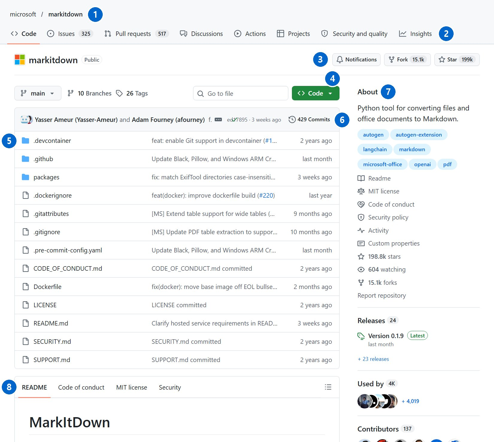
- 주인과 저장소 이름microsoft가 올린 markitdown입니다. 주소도 github.com/microsoft/markitdown 입니다.
- 메뉴Code는 파일, Issues는 질문과 오류 신고, Pull requests는 고친 것을 주인에게 보내는 곳입니다.
- Fork와 StarFork는 이 저장소를 내 계정으로 복사합니다. Star는 즐겨찾기이고, 많이 알려졌다는 뜻일 뿐 잘 된다는 보증은 아닙니다.
- 초록색 Code 단추누르고 Download ZIP을 고르면 저장소 전체를 내려받습니다.
- 파일 목록왼쪽부터 파일 이름, 마지막으로 바꾼 내용, 바꾼 때입니다.
- Commits지금까지 바꾼 기록입니다. 누가 언제 무엇을 바꿨는지 남아 있습니다.
- About한 줄 소개와 라이선스가 있습니다. MIT license는 출처만 남기면 거의 자유롭게 쓸 수 있습니다.
- README저장소의 대문 글입니다. 무엇을 하는 프로그램인지, 어떻게 쓰는지 적혀 있습니다.
MarkItDown은 PDF와 Word와 PowerPoint 파일을 마크다운 글로 바꾸는 프로그램이고, Microsoft가 누구나 쓸 수 있게 공개했습니다. 이렇게 프로그램의 설계도를 누구나 보고, 쓰고, 고칠 수 있게 공개한 것을 오픈소스라고 부릅니다. 대부분 무료이지만 써도 되는 범위는 라이선스마다 다릅니다.
저는 가져오기 전에 별 수보다 라이선스와 마지막으로 고친 날짜를 먼저 봅니다.
로그인한 상태로 저장소 화면에서 마침표 키를 누르면 브라우저 안에서 편집기가 열립니다.
교실 알리미 대시보드를 만든다면 거쳐 가는 다섯 가지
교실 화면에 시간표와 급식, 전달 사항을 띄우는 「우리 학교 교실 알리미」 대시보드를 만든다고 하고, 거쳐 가는 과정에 GitHub의 말 다섯 개를 하나씩 붙여보겠습니다!
- 「교실 알리미」 폴더를 만들고 화면 파일과 시간표 파일을 넣습니다.저장소 (Repository)프로젝트의 파일과 바꾼 기록을 함께 담는 공간
- 급식 칸을 더하고 「급식 칸 추가」라고 한 줄 적어 저장합니다.커밋 (Commit)바꾼 내용을 설명 한 줄과 함께 기록 하나로 남기는 일
- 잘 돌아가는 화면은 그대로 두고, 사본에서 3학년 교실용 화면을 실험합니다.브랜치 (Branch)원래 것을 건드리지 않고 따로 고쳐 보는 가지
- 「3반 화면에 어제 급식이 나와요」 같은 고칠 점을 한 건씩 적어 둡니다.이슈 (Issues)할 일과 오류를 한 건씩 적어 정리하는 게시판
- 매일 아침 급식 정보를 새로 받아 화면에 넣는 일을 맡겨 둡니다.GitHub Actions검사와 배포처럼 되풀이하는 일을 자동으로 돌리는 기능
앞의 실습에서 이미 두 가지를 하셨습니다. [New repository]로 저장소를 만드셨고, [Commit changes]를 눌러 커밋을 하셨습니다.
Pages를 켤 때 고른 [main]은 브랜치의 이름입니다. 주소가 열리기까지 걸린 1~2분은 Actions가 사이트를 내보낸 시간입니다.
다섯 가지를 실제 GitHub 화면에서 찾기
MarkItDown 저장소에서 다섯 가지가 어디에 있는지, 탭을 하나씩 눌러 찾아보겠습니다!
교실 알리미로 치면 「교실 알리미」 폴더입니다. 저장소 이름 옆의 [Code] 탭이 이 화면입니다.
앞 장에서 읽은 화면입니다. 5번이 담긴 파일이고, 6번이 지금까지 바꾼 기록의 수입니다. 파일과 기록이 한 화면에 함께 있습니다.
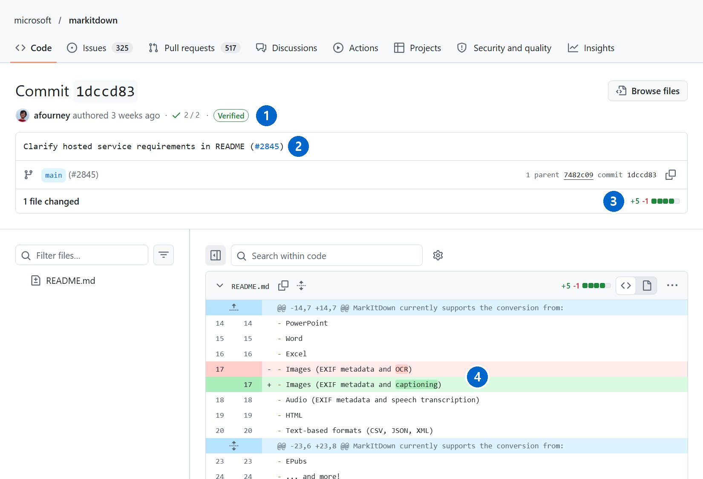
교실 알리미로 치면 「급식 칸 추가」라고 적고 저장한 한 번입니다. 이 화면은 README 글을 고친 커밋 하나를 연 것입니다.
- authored누가 언제 바꿨는지입니다.
- 설명 한 줄무엇을 바꿨는지 적은 글입니다.
- 1 file changed, +5 -1파일 1개에서 5줄을 더하고 1줄을 뺐습니다.
- 빨간 줄과 초록 줄빨간 줄은 뺀 것, 초록 줄은 더한 것입니다.
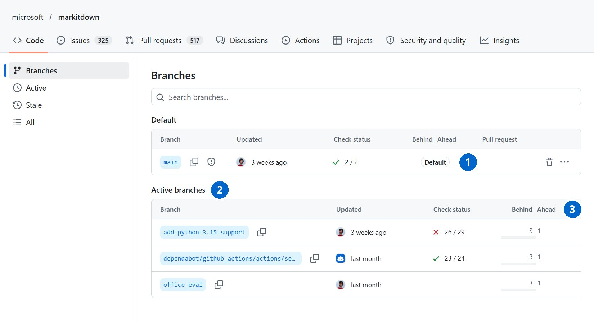
교실 알리미로 치면 3학년 교실용 화면을 실험하는 사본입니다. 저장소 첫 화면의 [Branches]를 누르면 이 화면이 나옵니다.
- main지금 쓰이는 본래 가지입니다. Pages를 켤 때 고른 것이 이 main입니다.
- Active branches따로 떼어 고치고 있는 가지들입니다.
- Behind와 Aheadmain보다 몇 번 뒤처지고 몇 번 앞섰는지입니다.
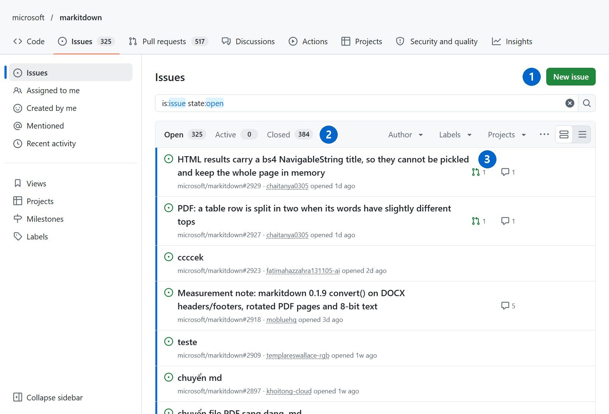
교실 알리미로 치면 「3반 화면에 어제 급식이 나와요」를 적어 두는 곳입니다. 위쪽 메뉴의 [Issues]를 누르면 나옵니다.
- New issue새 글을 씁니다.
- Open과 Closed아직 열려 있는 글이 325건, 끝나서 닫은 글이 384건입니다.
- 제목한 건이 글 하나입니다. 아래에 누가 언제 올렸는지 적혀 있습니다.
남이 만든 스킬이나 프로그램이 내 컴퓨터에서 되지 않을 때, 같은 일을 겪은 사람이 있는지 여기에서 찾아봅니다.
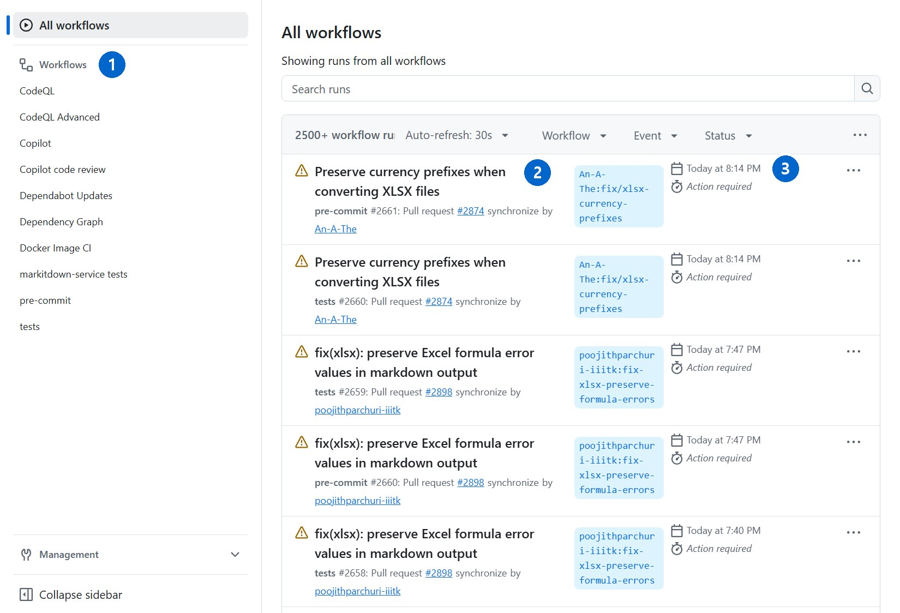
교실 알리미로 치면 매일 아침 급식 정보를 새로 받아 넣는 일입니다. 위쪽 메뉴의 [Actions]를 누르면 나옵니다.
- Workflows맡겨 둔 일의 목록입니다. tests는 파일을 올릴 때마다 돌리는 검사입니다.
- 실행 한 번무엇을 올려서 돌았는지 적혀 있습니다.
- 때와 결과언제 돌았고 어떻게 끝났는지입니다.
커밋 기록 전체는 저장소 첫 화면의 [Commits]를 누르면 나옵니다. 로그인하지 않은 상태에서는 GitHub가 이 화면을 자주 막아서, 캡처에는 커밋 하나를 연 화면을 넣었습니다.
파일 이름만 보고 무슨 파일인지 읽기
MarkItDown 저장소 첫 화면에 보이는 파일과 폴더를 세 묶음으로 나눠, 이름만 보고 무슨 파일인지 읽어보겠습니다!
- README.md
- 대문 글입니다. 가장 먼저 읽습니다.
- LICENSE
- 써도 되는 범위입니다. 확장자가 없어도 글 파일입니다.
- SECURITY.md
- 보안 문제를 발견했을 때 알리는 방법입니다.
- SUPPORT.md
- 도움을 받을 수 있는 곳입니다.
- CODE_OF_CONDUCT.md
- 함께 일하는 사람들이 지킬 약속입니다.
- packages
- 프로그램 본체가 들어 있습니다.
- .github
- GitHub에게 주는 설정입니다. 파일을 올릴 때마다 자동으로 돌리는 검사가 들어 있습니다.
- .devcontainer
- 개발에 쓸 환경을 한 번에 차리는 설정입니다.
- .gitignore
- Git이 올리지 않을 파일의 목록입니다. 비밀번호가 든 파일 이름을 여기에 적습니다.
- .gitattributes
- 파일 종류마다 Git이 다루는 방법을 적습니다.
- Dockerfile, .dockerignore
- 프로그램을 어느 컴퓨터에서나 똑같이 돌리도록 포장하는 방법입니다.
- .pre-commit-config.yaml
- 올리기 전에 자동으로 돌릴 검사의 목록입니다.
저는 처음 보는 저장소에서 README.md, LICENSE, 마지막으로 고친 날짜 순서로 봅니다. 점으로 시작하는 파일은 건너뜁니다.
오늘 만드신 저장소에는 index.html 과 요구사항.md 두 개가 들어 있습니다. README.md 를 하나 더 올려 두면 다른 분이 들어왔을 때 무엇을 하는 저장소인지 알 수 있습니다.
확장자 읽고, 파일 하나 열어 보기
파일 이름 끝의 점 뒤 글자가 확장자입니다. 오늘 쓰는 확장자를 모아 읽고, 저장소에서 파일 하나를 열어보겠습니다!
| 확장자 | 무엇인가 | 오늘 쓰는 곳 |
|---|---|---|
| .md | 마크다운입니다. 제목과 목록을 기호로 적은 글입니다. | 요구사항.md, SKILL.md, DESIGN.md, README.md |
| .html .css .js | 화면의 뼈대, 꾸밈, 움직임입니다. | index.html |
| .csv | 표를 글자로 적은 파일입니다. | 맛집 지도에서 받는 목록 |
| .yaml .json .toml | 설정을 적은 파일입니다. | .pre-commit-config.yaml |
| .py | 파이썬 코드입니다. | MarkItDown의 packages 폴더 |
| .sql | 데이터베이스에 표를 만드는 명령입니다. | 맛집 지도 따라 만들기 |
| .zip | 여러 파일을 하나로 묶은 파일입니다. | Download ZIP, 스킬 묶음 |
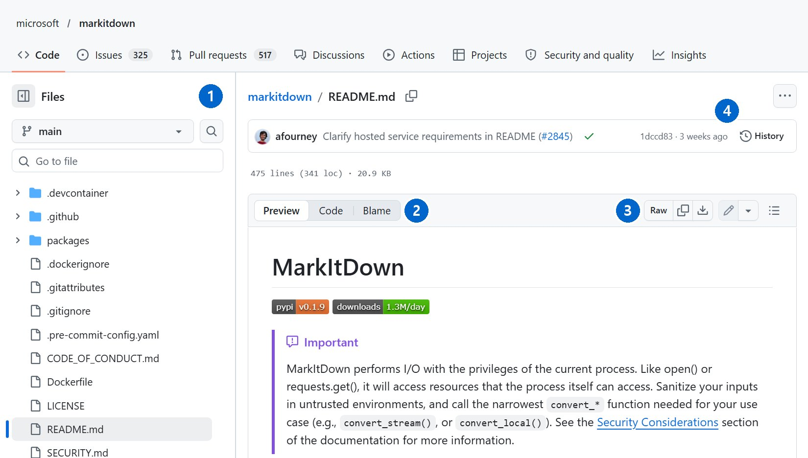
- Files왼쪽 목록에서 다른 파일로 옮겨 갑니다.
- Preview와 CodePreview는 꾸며진 모습, Code는 적힌 그대로의 글자입니다.
- Raw, 복사, 내려받기이 파일 하나만 가져갑니다. 스킬 파일 하나만 받을 때 이 단추를 씁니다.
- History이 파일을 바꾼 기록입니다.
.md 파일은 메모장으로 열립니다. 스킬 파일과 디자인 파일도 .md 라서, 받은 뒤에 메모장으로 열어 무엇을 시키는 글인지 읽어 볼 수 있습니다.
이 말들을 몰라도 만들 수 있습니다
목적이 분명하고 올바르게 질문한다면, 이제는 상상하는 것 무엇이든 만들 수 있습니다.
저도 이 말들을 먼저 배우고 시작하지 않았습니다. AI가 알려 주는 대로 단추를 누르다가 하나씩 알게 됐습니다.
3단계에서 해 보신 것처럼 AI에게 질문을 받아 목적을 분명히 해 두면, 올리고 기록하는 일은 AI에게 맡길 수 있습니다.
알아 두면 남이 올려 둔 스킬과 오픈소스를 읽고 골라 담을 수 있고, AI가 「커밋했습니다」라고 할 때 무슨 일이 일어났는지 알아봅니다.
맛집 지도로 보는 데이터베이스
10분지도에 맛집을 하나씩 올리면서, 여러 사람이 올린 자료가 한곳에 모이는 모습을 같이 보겠습니다!
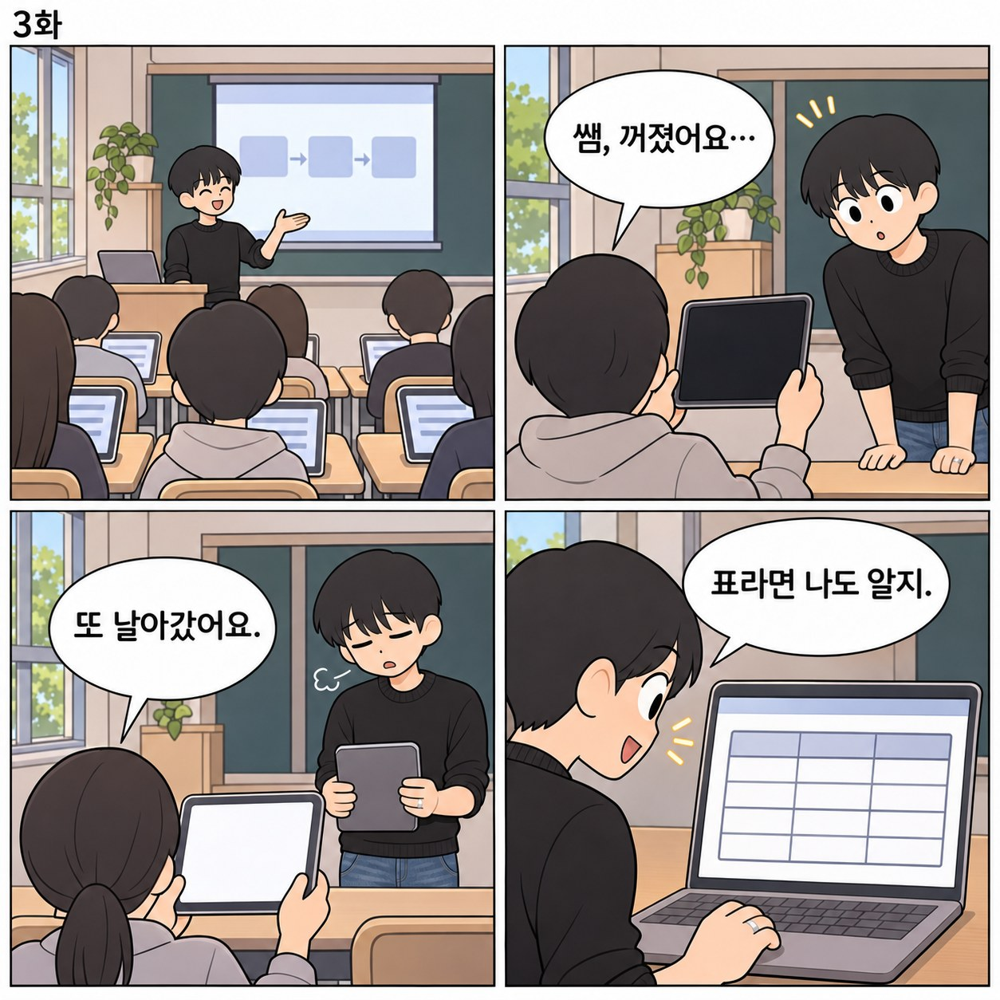
여가 완전 찐이네. 밥 뭇나?
부산연구정보원 맛집 지도에 선생님의 단골집을 하나씩 올려보겠습니다!
- 지도 열기[지도 열기]를 누르거나 QR을 찍습니다.
- 지도에서 가게 자리 누르기지도를 끌어 옮기고 키워서 가게가 있는 자리를 누릅니다.
- 가게 이름과 한 줄 추천 적고 올리기이름 칸에는 별명을 적으셔도 됩니다.
- 다른 선생님의 핀 눌러 보기몇 초마다 새 핀이 지도에 나타납니다.
저는 학생이 미션을 풀며 배우는 페이지를 만들었는데, 수업 중에 학생 기기가 꺼지면 그때까지 한 것이 모두 사라졌습니다. 그래서 브라우저에 저장하도록 고쳤더니, 이번에는 시크릿 모드로 들어온 학생들의 기록이 사라졌습니다.
그때 데이터베이스를 알게 됐습니다. Supabase와 Firebase 가운데 Supabase를 골랐는데, 자료가 표 모양으로 쌓여서 저도 이해할 수 있었기 때문입니다.
오늘 맛집 지도도 같은 방식입니다. 선생님들께서 각자 노트북에서 올리신 핀이 표 하나에 한 줄씩 쌓이고, 지도는 그 표를 읽어 와서 그립니다.
연수가 끝난 뒤 이 지도를 내 Supabase로 직접 만들어 보실 수 있게, 지도 파일과 순서를 따로 정리해두었습니다.
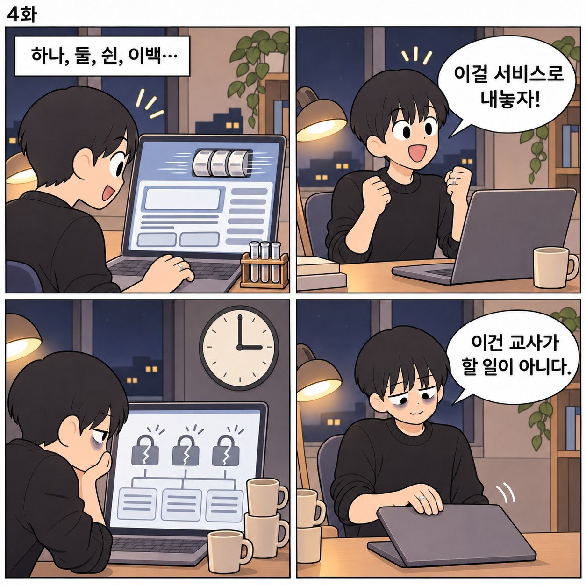
정보 수집은 최소화합니다
학생이 쓰는 페이지를 만들수록, 무엇을 저장하지 않을지를 먼저 정하게 됐습니다.
올해 가상 실험실을 356개 넘게 만들면서, 이것을 서비스로 내놓으려고도 했습니다. 그런데 할수록 보안 사고 사례가 눈에 들어왔고, 이것은 교사 혼자 할 일이 아니라고 느꼈습니다. 그 뒤로 저는 정보 수집을 최소화하기로 했습니다.
스킬 · 가져와 쓰고, 내 것으로 만들기
20분에이전트는 그림 한 장으로 짚고, 스킬 파일을 Copilot에 첨부해 맛집 소개 페이지와 강의 화면을 만든 뒤, 돌아가서 나만의 스킬을 만드는 방법까지 보겠습니다!
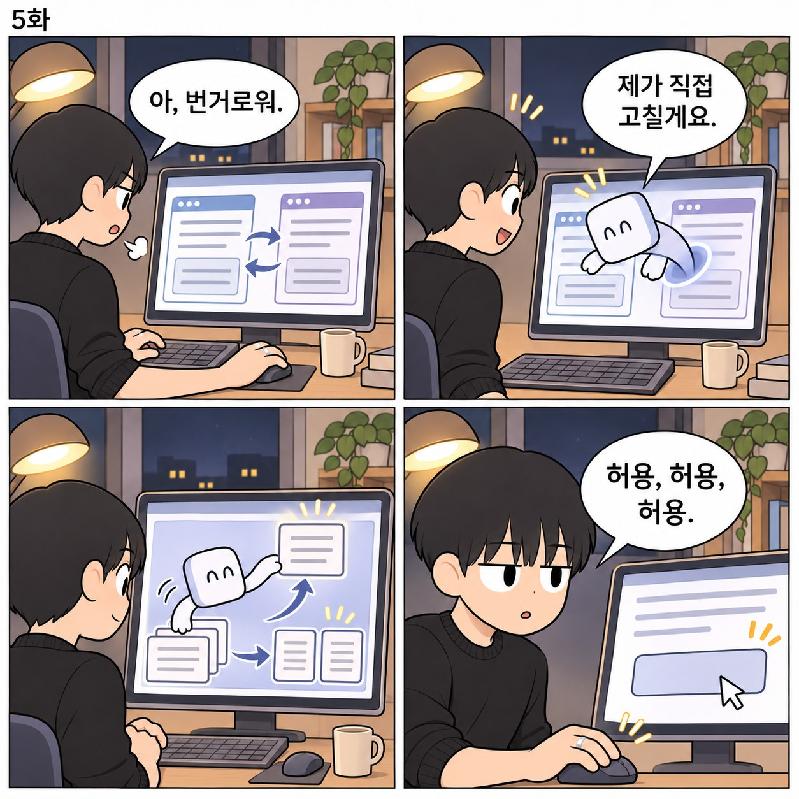
채팅창에서 복사해 붙이던 일을 AI가 직접 합니다
에이전트는 다음 시간에 자세히 배우시니, 저는 한 번 고치는 데 드는 걸음을 비교한 그림 한 장만 보겠습니다!
배포까지 하고 나면, 웹 채팅에서는 한 번 고칠 때마다 이 다섯 걸음을 다시 밟습니다. 열 번 고치면 쉰 걸음입니다.
폴더에서 일하는 AI는 파일을 직접 고쳐서, 저는 부탁하고 확인만 합니다.
채팅에서 코드를 새로 받을 때마다 제가 직접 GitHub에 올리는 일이 번거로웠고, 코드 관리도 되지 않았습니다. 내 컴퓨터 폴더에 GitHub를 연결해 두고 AI에게 맡기니, AI가 필요한 부분만 열어서 고치고 올리는 일과 버전 관리까지 대신 했습니다. 이렇게 내 컴퓨터에서 직접 일하는 AI를 에이전트라고 부릅니다.
문제도 생겼습니다. 저는 점점 AI가 무슨 일을 하는지 모르는 채로 「허용」만 누르는 사람이 되어 갔습니다.
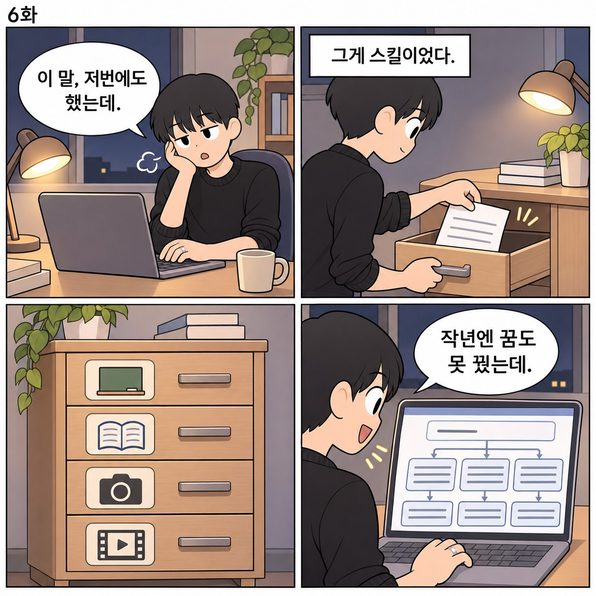
스킬은 AI에게 미리 건네 두는 일 설명서입니다
같은 설명을 여러 번 치게 될 때, 그 설명을 파일 하나로 적어 둔 것이 스킬입니다.
| 프롬프트 | 스킬 | |
|---|---|---|
| 쓰는 법 | 만들 때마다 대화창에 붙여 넣습니다. | 한 번 올려 두면 관련된 일을 시킬 때 AI가 스스로 꺼내 읽습니다. |
| 고치기 | 매번 새로 손봅니다. | 파일 하나를 고치면 다음부터 모두 반영됩니다. |
| 되는 곳 | 모든 AI에서 됩니다. | 스킬 기능이 있는 곳에서 됩니다. |
저는 수업 페이지, 연수 페이지, 강의 화면, 단권화 노트, 매뉴얼에 넣을 화면 캡처, 영상 편집에 쓰는 스킬을 만들어 씁니다. 이 연수 페이지도 연수 페이지 스킬로 만들었습니다.
Copilot Chat에는 스킬을 올려 두는 기능이 없어서, 오늘은 스킬 파일을 대화에 첨부합니다. Claude 같은 곳에서는 한 번 올려 두면 필요할 때 AI가 스스로 꺼내 읽습니다.
 GitHub에서 찾을 수 있는 스킬 모음
GitHub에서 찾을 수 있는 스킬 모음
해외에서 많이 쓰는 것, 한국에서 많이 쓰는 것, 학교 일에 쓰는 것으로 나눠 모았습니다.
해외에서 많이 쓰는 것
Word, PDF, PPT, 엑셀 파일을 만들고 고칩니다.
VoltAgent/awesome-design-md유명 사이트 84곳의 디자인을 DESIGN.md 로 적어 둔 모음입니다. getdesign.md 에서 미리보기를 볼 수 있습니다.
emilkowalski/skills화면의 움직임을 부르는 용어를 알려 주고 움직임을 다듬습니다.
한국에서 많이 쓰는 것
한글 파일을 고치고, 나이스 급식을 읽고, 맞춤법을 보고, 생기부 글자 수와 바이트를 셉니다.
epoko77-ai/im-not-aiAI가 쓴 글의 말투를 사람이 쓴 글처럼 다듬습니다.
chrisryugj/kordoc한글 파일과 PDF를 마크다운으로 바꾸고, 마크다운을 기안문과 보고서 HWPX로 바꿉니다.
chrisryugj/korean-law-mcp공문의 관련 근거에 적을 법령과 조문을 법제처 원문에서 확인합니다.
학교 일에 쓰는 것
공문 폴더를 정리하고 인수인계서를 만듭니다.
blueshadow62/korean-school-records-toolkit세특, 창체, 행특의 초안을 쓰고 글자 수와 바이트를 셉니다.
raphysicst-create/teacher_doc작년 공문을 바탕으로 올해 공문 초안과 확인표를 만듭니다.
학교 일에 쓰는 스킬은 아직 개인이 올린 초기 단계라 별이 열 개 안팎입니다. 별 수보다 SKILL.md 를 직접 열어 무엇을 시키는 글인지 읽어 보는 편이 정확합니다. 스킬은 AI에게 주는 지시문이라, 저는 가져오기 전에 파일을 지우거나 밖으로 보내라는 줄이 없는지 먼저 봅니다.
디자인과 화면을 찾을 때 보는 곳
디자인을 파일로 받아 오는 곳, 잘 만든 화면을 구경하는 곳, 부품과 움직임과 글꼴을 고르는 곳으로 나눠 모았습니다.
디자인을 파일로 받아 오는 곳
유명 사이트의 디자인을 DESIGN.md 로 받아 옵니다. 사이트마다 미리보기가 붙어 있습니다.
디자인 서랍제가 모아 둔 디자인 모음입니다. 고른 디자인의 DESIGN.md 를 받을 수 있습니다.
Fluent 2Microsoft가 공개한 디자인 규칙입니다. 색, 글자, 모서리, 움직임 값이 나와 있습니다.
Design Diversity · 네오브루탈리즘발표 자료용 디자인 팩입니다. 슬라이드 21장의 미리보기와 색, 글꼴 값이 한 화면에 나와 있습니다.
잘 만든 화면을 구경하는 곳
실제 사이트의 첫 화면을 종류별로 모아 둔 곳입니다.
Lapa Ninja첫 화면을 통째로 캡처해 분야별로 모아 둔 곳입니다. 교육 분류가 따로 있습니다.
One Page Love한 페이지로 끝나는 사이트만 모아 둔 곳입니다.
Mobbin앱과 서비스의 안쪽 화면을 흐름째 볼 수 있습니다.
Refero로그인, 설정, 목록 같은 화면을 종류별로 찾아볼 수 있습니다.
Awwwards상을 받은 사이트를 모아 둔 곳입니다. 움직임이 화려한 사이트가 많습니다.
부품을 가져오는 곳
단추, 카드, 토글 같은 부품을 코드째 복사합니다. 모두 오픈소스입니다.
daisyUI단추와 카드와 탭 같은 부품을 이름만 붙여 쓰는 모음입니다.
HyperUI화면 조각을 복사해 붙여 쓰는 모음입니다.
움직임을 고르는 곳
색, 글꼴, 아이콘을 고르는 곳
한글 무료 글꼴을 모아 둔 곳입니다. 글꼴마다 써도 되는 범위가 표시돼 있습니다.
Coolors어울리는 색 조합을 만들어 줍니다.
Lucide선으로 그린 아이콘 모음입니다. 무료로 씁니다.
남의 화면을 참고할 때는 짜임과 분위기만 가져오고, 로고와 문구와 그림은 그대로 옮기지 않습니다. 브랜드의 DESIGN.md 를 그대로 쓰면 그 회사 사이트처럼 보이니, 색 한두 가지는 바꿔 쓰는 편이 안전합니다.
맛집 지도 자료로 소개 페이지 만들기
맛집 지도에 모인 자료와 디자인 파일을 Copilot에 올려, 맛집 소개 페이지나 발표 자료를 만들어보겠습니다!
첨부한 CSV는 선생님들이 추천한 부산 맛집 목록이야. 이 목록으로 맛집 소개 페이지를 HTML 파일 하나로 만들어 줘. 화면의 색, 글꼴, 모서리, 여백은 첨부한 DESIGN.md 를 그대로 따라 줘. 가게마다 카드 한 장에 가게 이름, 한 줄 추천, 추천한 사람을 넣어 줘. CSV에 없는 내용은 지어내지 마.
- 맛집 지도에서 CSV 내려받기맛집 지도 위쪽의 [CSV 내려받기]를 누릅니다. 가게 이름, 한 줄 추천, 올린 사람이 표로 들어 있습니다.
- 디자인 파일 고르기직접 고르려면 디자인 서랍이나 getdesign.md를 엽니다. 바로 실습하려면 [예시 디자인 랜덤 다운로드 받기]를 누르세요. 받은 DESIGN.md를 맛집 CSV와 함께 첨부합니다.
- Copilot 새 대화에 두 파일 첨부하기채팅창의 파일 첨부 단추를 누르거나 파일을 끌어다 놓습니다.
- 보내는 말을 붙여 넣고 보내기[복사]를 누르고 붙여 넣습니다. 발표 자료로 받고 싶으면 「HTML 파일 하나」를 「PowerPoint 파일」로 바꿉니다.
- 만든 화면 열어 보기받은 코드를 메모장에 붙이고 matjip.html 로 저장한 뒤 엽니다.
CSV는 표를 글자로 적은 파일입니다. 선생님들께서 맛집 지도에 올리신 핀이 데이터베이스에 한 줄씩 쌓였고, CSV는 그 표를 그대로 내려받은 것입니다.
DESIGN.md 는 화면의 색과 글꼴과 여백을 적어 둔 설명서입니다. 스킬과 쓰는 방법이 같아서, 파일을 대화에 올리면 AI가 그 설명서대로 화면을 만듭니다.
같은 CSV라도 어떤 DESIGN.md 를 붙이느냐에 따라 화면이 달라집니다. 옆 선생님과 다른 디자인을 고르신 뒤 결과를 나란히 놓고 봐주시길 바랍니다~!
라이브 슬라이드 스킬로 강의 화면 3장 만들기
제가 만든 스킬 파일에 교과서 소단원이나 학습지 하나를 넣어, 방향키로 넘기는 강의 화면 3장을 직접 만들어보겠습니다!
목록에서 이름을 고르거나 미리보기 그림을 눌러 보세요. 고른 디자인에 맞춰 아래의 파일이 바뀝니다.
미리보기 그림에서 고르기

스킬 파일과 디자인 파일을 하나씩 받아 수업 자료와 함께 Copilot에 첨부하세요.
제가 수업에 쓰는 강의 화면
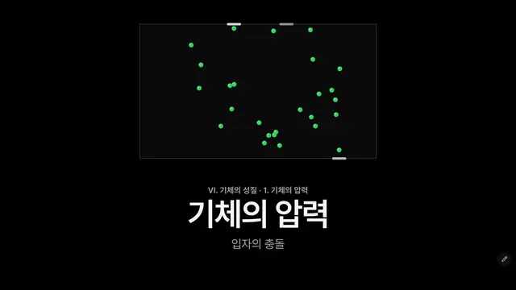
기체 입자의 충돌과 기체의 압력입자가 벽에 부딪히는 그림과 학습지 빈칸이 한 단계씩 열립니다.
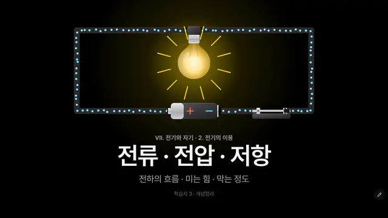
전류, 전압, 저항도선 속에서 움직이는 전자를 그림으로 보여 줍니다.
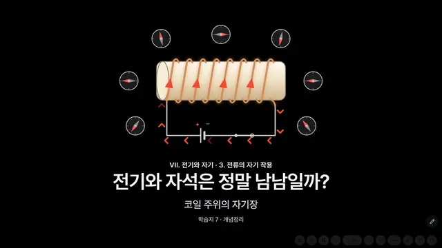
코일 주위의 자기장원형 도선을 여러 번 감은 코일을 다룹니다.
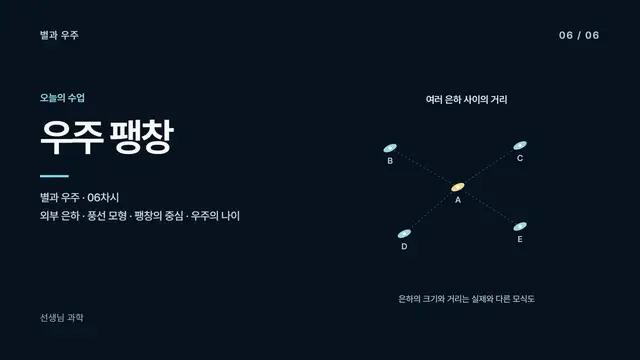
우주의 팽창풍선을 불기 전과 분 뒤를 나란히 놓고 설명합니다.
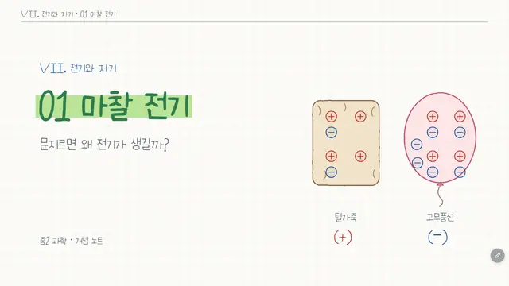
마찰 전기, 손글씨 노트모눈종이 위에 한 줄씩 써지는 손글씨 노트 화면입니다.
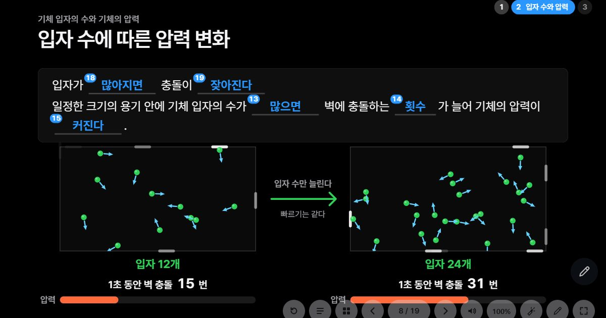
강의 화면 33편 모두 보기전기와 자기, 기체의 성질, 별과 우주 단원의 강의 화면을 모아 둔 곳입니다.
예시 강의와 실습 자료
스킬을 올려 두는 도구에서 쓰는 묶음
- 스킬 파일 하나 고르기위의 「강의 화면 디자인 고르기」에서 마음에 드는 디자인을 선택하고 스킬 파일을 받습니다. 디자인 파일 단추도 보이면 두 파일을 모두 받으세요.
- 넣을 자료 정하기교과서 소단원 쪽을 사진으로 찍거나 쓰시던 학습지 파일을 준비합니다. 없으면 예시 학습지를 내려받습니다.
- Copilot 새 대화에 스킬 파일과 자료 첨부하기디자인 파일(.md)을 따로 고르셨다면 그 파일도 함께 올립니다.
- 「첨부한 설명서대로 이 자료로 강의 화면을 만들어 줘」 보내기Copilot이 장면 계획과 빈칸을 먼저 보여 줍니다.
- 계획을 확인하고 「좋아」 보내기고칠 곳이 있으면 그 줄만 말합니다.
- 만든 화면을 열어 방향키로 넘겨 보기받은 코드를 메모장에 붙이고 lecture.html 로 저장한 뒤 엽니다.
이 스킬 파일은 제가 강의 화면을 만들면서 고쳐 온 것들을 적어 둔 설명서를, 연수 실습에 맞게 3장 분량으로 줄인 판입니다. 세 파일은 화면을 넘기는 방식과 빈칸을 다루는 방식이 같고, 디자인을 적은 부분만 다릅니다.
같은 자료를 세 파일에 각각 넣어 보면 디자인 설명이 결과를 얼마나 바꾸는지 보입니다.
Copilot Chat에서는 위의 글 파일을 대화에 첨부합니다. Claude처럼 스킬을 올려 두는 기능이 있는 도구에서는 zip 묶음을 한 번 올려 두고 씁니다.
첨부하기, 올려 두기, 내 컴퓨터에 깔아 두기
오늘은 스킬 파일을 대화에 첨부했습니다. 그다음에 갈 수 있는 두 가지 방법을 이어서 보겠습니다!
스킬 파일을 채팅창에 끌어다 놓습니다. Copilot Chat을 비롯해 어느 AI에서나 되고, 새 대화를 열 때마다 다시 첨부합니다.
Claude는 설정의 스킬 칸에 스킬 묶음을 올려 둡니다. ChatGPT는 프로젝트의 지침 칸에 스킬 글을 붙여 넣어 둡니다. 한 번 넣어 두면 대화마다 첨부하지 않습니다.
Claude Code, Codex, VS Code의 GitHub Copilot처럼 내 컴퓨터에서 일하는 AI는 컴퓨터의 스킬 폴더를 읽습니다. GitHub에서 받은 스킬 폴더를 그 자리에 넣어 둡니다.
| 레벨 1 첨부 | 레벨 2 올려 두기 | 레벨 3 깔아 두기 | |
|---|---|---|---|
| 스킬 꺼내기 | 내가 매번 첨부합니다. | AI가 필요할 때 꺼냅니다. | AI가 필요할 때 꺼냅니다. |
| 스킬 개수 | 한 대화에 한두 개입니다. | 여러 개를 넣어 둡니다. | 수십 개를 깔아 둡니다. |
| 비용 | 무료로 됩니다. | 유료 구독이면 넉넉합니다. | 대부분 유료 구독이 필요합니다. |
레벨 3에서는 스킬을 여러 개 깔아 두고 일을 시키기만 합니다. 어떤 스킬을 꺼낼지는 AI가 스킬마다 적힌 설명을 읽고 고릅니다. GitHub 저장소 주소를 건네며 「이 저장소의 스킬을 깔아 줘」라고 하면 설치도 AI가 합니다.
Claude와 ChatGPT도 Microsoft와 이어져 있습니다. ChatGPT를 만든 OpenAI는 Microsoft의 클라우드인 Azure를 써 왔고, Claude를 만든 Anthropic도 2025년 11월에 Azure를 쓰기로 Microsoft와 계약했습니다. Microsoft 365 Copilot 안에서도 두 회사의 모델이 함께 쓰입니다.
앞 칸의 「스킬을 올려 두는 도구에서 쓰는 묶음」이 레벨 2와 레벨 3에서 쓰는 파일입니다.
돌아가서, 나만의 스킬 만들기
오늘은 만들 시간이 없어, 돌아가신 뒤에 그대로 붙여 넣으실 프롬프트 세 개를 적어 두었습니다.
이 대화에서 내가 고쳐 달라고 한 것들을 모두 모아, 다음에도 같은 결과가 나오도록 스킬 파일(SKILL.md)로 정리해 줘. 맨 위에는 name 과 description 을 적어 줘. description 에는 이 스킬을 언제 꺼내 써야 하는지 적어 줘. 본문은 일하는 순서, 꼭 지킬 것, 하지 말 것, 다 됐는지 확인하는 방법 순서로 적어 줘. 이번 대화의 주제와 내용은 빼고 일하는 방식만 남겨 줘. 내가 말하지 않은 규칙은 지어내지 마.
나는 [학교급, 과목] 교사야. [되풀이하는 일]을 맡길 스킬을 만들고 싶어. 바로 만들지 말고 한 번에 하나씩 나에게 질문해 줘. 질문마다 네 추측을 함께 적어 줘. 누가 읽는 글인지, 꼭 들어가야 할 것, 넣으면 안 되는 것, 잘 된 예시가 있는지 물어봐 줘. 다 물었으면 스킬 파일(SKILL.md)로 정리해 줘.
첨부한 파일은 내가 잘 만들었다고 생각하는 [문서 종류]야. 이 파일의 짜임, 말투, 분량, 되풀이되는 형식을 읽고, 같은 종류의 문서를 새로 만들 때 쓸 스킬 파일(SKILL.md)로 정리해 줘. 파일에 적힌 이름, 학교, 날짜 같은 내용은 스킬에 넣지 마.
--- name: gajeong-tongsin description: 가정통신문 초안을 쓸 때 사용. 「가정통신문 써 줘」, 「안내장 만들어 줘」라는 말에 꺼낸다. --- # 일하는 순서 # 꼭 지킬 것 # 하지 말 것 # 다 됐는지 확인하는 방법
고민의 장과 A × B = C
10분학생의 질문 하나에 한 줄씩 답을 올려 보고, A × B = C라는 식을 같이 움직여보겠습니다!
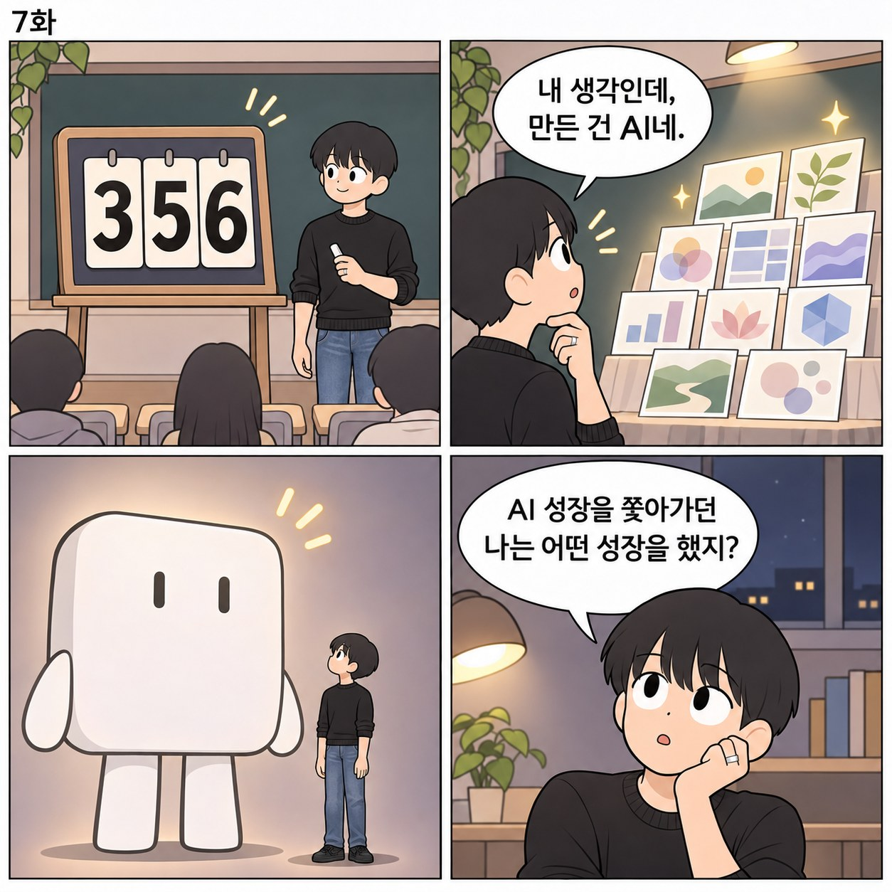
「AI가 문제 다 풀어 주는데 우리 공부 왜 해요?」
저는 올해 AI가 무엇을 할 수 있는지에 감탄하면서 결과물을 만드는 데 급급했습니다. 가상 실험실을 356개 넘게 만들었지만, 그동안 제가 무엇을 배웠는지는 답하기 어렵습니다.
그래서 요즘은 새 결과물 앞에서 「이게 왜 필요한데, 아이들에게 무슨 도움이 되는데」를 먼저 묻습니다. 이 질문의 답은 저보다 경험이 많으신 선생님들께 듣고 싶습니다.
AI 기업을 이끄는 사람들은 무엇을 기르라고 했을까요?
네 사람이 꼽은 것은 질문하기, 넓게 배우기, 공감하기, 계속 배우기였습니다.
OpenAI의 CEO입니다. 답을 찾는 것보다 무엇을 물을지 아는 것이 더 중요하다고 했습니다.
Tesla와 SpaceX의 CEO입니다. 예술, 과학, 공학까지 되도록 넓게 배우라고 했습니다. 아는 것이 넓을수록 AI와 로봇에게 던질 질문을 잘 만든다는 이유입니다.
Microsoft의 CEO입니다. 공감할 줄 모르면 좋은 머리가 낭비된다고 했습니다.
Google DeepMind의 CEO입니다. 확실한 것은 일하는 내내 계속 배워야 한다는 것 하나라고 했습니다.
네 사람의 말은 줄여서 옮긴 것입니다. AC Media의 인스타그램 게시글 「유명 인사들이 꼽은 AI 시대에 성공 위해 키워야 할 역량 9가지」에서 네 가지를 골랐습니다.
네 가지 가운데 코딩이나 AI를 다루는 법은 없었습니다. 모두 다음 칸의 식에서 B 자리에 들어가는 것들입니다.
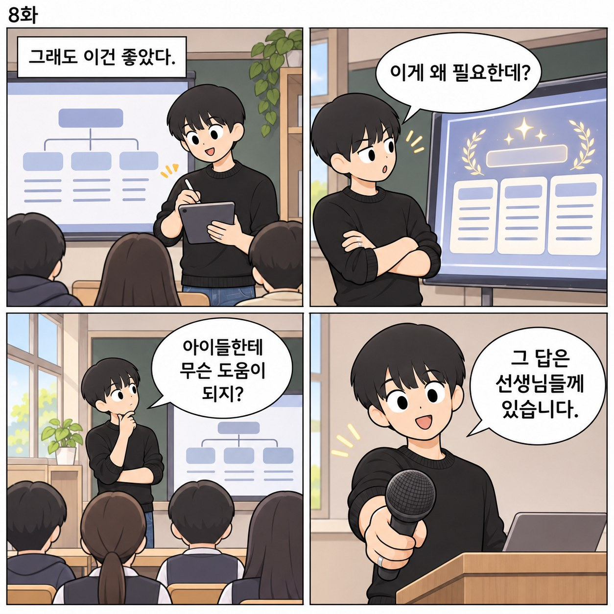
A × B = C
A는 AI의 성능이고, B는 사람의 질문과 판단과 명령입니다. 막대를 움직여 C가 어떻게 달라지는지 보겠습니다!
막대를 움직이거나 단추를 눌러 보세요.
A × B = C라는 식을 본 적이 있습니다. A는 AI의 성능, B는 사람의 질문과 판단과 명령, C는 결과입니다. B가 0이면 A가 아무리 커도 C는 0이고, B가 음수이면 C도 음수가 됩니다. 그래서 저는 우리가 키워야 하는 쪽이 B라고 생각합니다.
앞으로 B에는 공감과 인성이 아주 크게 들어갈 것이라고 생각합니다.
내 수업과 업무에 맞춘 도구를 직접 만들어 쓰는 편리함은 컸습니다. 다만 도구를 만드는 능력은 꼭 갖춰야 하는 것이라기보다, 있으면 삶이 풍요로워지는 것이라고 느낍니다.
다시 보실 곳
3단계의 interview-me 스킬과 규칙 파일, 6단계의 보내는 말을 그대로 두었습니다.
6단계에 스킬 저장소와 디자인 레퍼런스 사이트를 모아 두었습니다.
오늘 시간이 모자라 다루지 못한 것은 아래 접힌 칸에 적어 두었습니다.
더 해 보실 것
맛집 지도 따라 만들기. 지도 파일과 표를 만드는 SQL을 받아 내 Supabase와 내 GitHub로 같은 지도를 만드는 순서를 따로 정리해두었습니다.
내 스킬 만들기. 6단계 끝에 그대로 붙여 넣으실 프롬프트 세 개를 적어 두었습니다.
MarkItDown. Microsoft가 공개한 오픈소스로, PDF와 Word와 PowerPoint 파일을 마크다운으로 바꿉니다. 파일을 통째로 AI에 넣는 대신 글만 뽑아 넣을 수 있습니다. Python이 있어야 하고, 스캔한 PDF와 한글(HWP) 파일은 읽지 못합니다. 주소는 github.com/microsoft/markitdown 입니다.
그 밖의 오픈소스. PPT Master는 문서를 고칠 수 있는 PowerPoint로 바꾸는 스킬입니다. Excalidraw는 브라우저에서 바로 쓰는 손그림 도식 도구입니다. n8n은 여러 앱을 이어 일을 자동으로 돌리는 도구인데, 코드는 공개돼 있어도 라이선스가 따로 있어서 쓰기 전에 읽어 보아야 합니다.
저작물. 보호받는 것은 표현이고, 짜임과 방식은 누구나 쓸 수 있습니다. 수업 시간에는 남의 자료를 넓게 쓸 수 있지만, GitHub Pages에 올리면 누구나 보는 공개 게시가 되어 그 범위를 벗어납니다. 교과서 그림과 남의 사진은 공개 저장소에 올리지 않습니다.
연수 뒤에 다시 열어 보실 수 있게 프롬프트와 스킬 파일은 이 페이지에 그대로 두겠습니다. 저라면 3단계의 Interview 프롬프트부터 다시 열어 보겠습니다.
바이브코딩을 계속하신다면
오늘 실습은 브라우저에서 할 수 있습니다. 내 컴퓨터에서 AI와 함께 파일을 고칠 때는 Git으로 작업 내용을 기록하고 Python으로 만든 도구를 실행할 수 있습니다.
AI와 함께 고친 파일을 Git에 저장해 두면(커밋), 무엇이 바뀌었는지 비교하고 이전 버전으로 돌아갈 수 있습니다. 내 컴퓨터에서 작업한 파일을 GitHub에 올릴 때도 씁니다.
설치할 때 Windows에서는 기본 설정으로 [Next]를 누르다가 [Install]을 누릅니다. Mac에서는 먼저 터미널에 git --version을 입력해 보세요. 설치 안내가 뜨면 안내에 따라 진행합니다.
수업 자료의 파일 형식을 한꺼번에 바꾸거나, 만든 웹페이지를 내 컴퓨터에서 미리 열어 볼 때 씁니다. AI 스킬에 딸린 검사 도구 중에도 Python으로 실행하는 것이 있습니다.
설치할 때 Windows에서는 아래 표에서 내가 받은 설치 파일에 맞는 줄을 보세요. Mac에서는 Python 공식 사이트에서 macOS용 설치 파일(.pkg)을 받으세요.
| Windows에서 Python을 받은 방법 | 설치할 때 볼 곳 |
|---|---|
| [설치]를 누릅니다. 처음부터 PATH에 체크하는 칸은 없습니다. 처음 실행할 때 명령어 폴더를 PATH에 추가할지 물으면 「예」를 선택해도 됩니다. | |
| python.org에서 받은 Windows installer 파일 (옛 방식) | 파일을 연 뒤 첫 화면 맨 아래에서 Add python.exe to PATH에 체크하고 [Install Now]를 누릅니다. |
python이라고 입력해 실행할 수 있습니다.잘 깔렸는지 확인하기
설치한 뒤 터미널을 새로 엽니다. Windows에서는 시작 메뉴에서 「터미널」이나 「PowerShell」을 검색하세요. 다음 명령을 하나씩 입력해 버전 숫자가 나오면 준비된 것입니다.
Git 확인 · git --version
Python 확인 · Windows에서는 python --version, Mac에서는 python3 --version
처음 실행할 때 Install Manager는 컴퓨터에 Python이 없으면 먼저 내려받습니다. 설치가 끝나면 버전을 다시 확인하세요. 열어 둔 AI 앱에서도 명령을 찾지 못하면 앱을 껐다가 다시 켜 보세요.
python을 쳤는데 Microsoft Store가 열립니다. 설치했는데도 계속 열리면 AI에게 「Windows에서 python을 입력하면 Store가 열려요. Python 설치 상태와 앱 실행 별칭, PATH 설정을 같이 확인해 주세요」라고 물어보세요.
다른 프로그램은 필요할 때 설치하셔도 됩니다. AI가 설치를 제안하면 어떤 작업에 쓸지 먼저 물어보세요.
만족도 조사 — 다음 연수를 위해 3분만 부탁드립니다